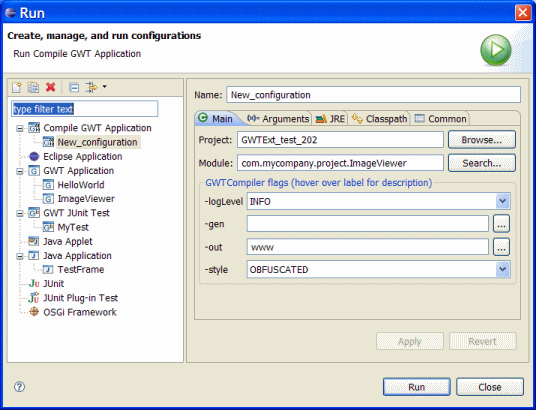

Compile GWT Application launch configuration
- Select Project and Module class
- Specify various GWTCompiler flags
- -loglevel: The level of logging detail: ERROR,
WARN, INFO, TRACE, DEBUG, SPAM, or ALL
- -gen: The directory into which generated files
will be written for review
- -out: The directory to write output files into
(defaults to current)
- -style: Script output style: OBFUSCATED, PRETTY,
or DETAILED (defaults to OBFUSCATED)
- Click Run
 |